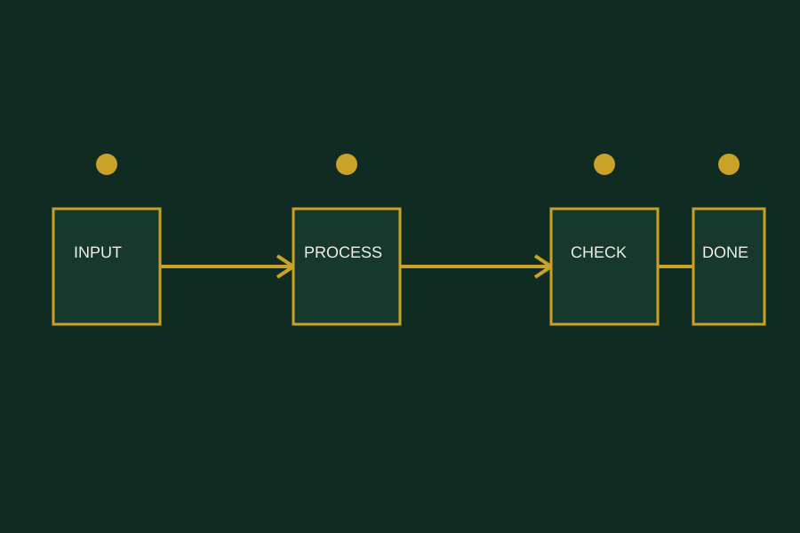
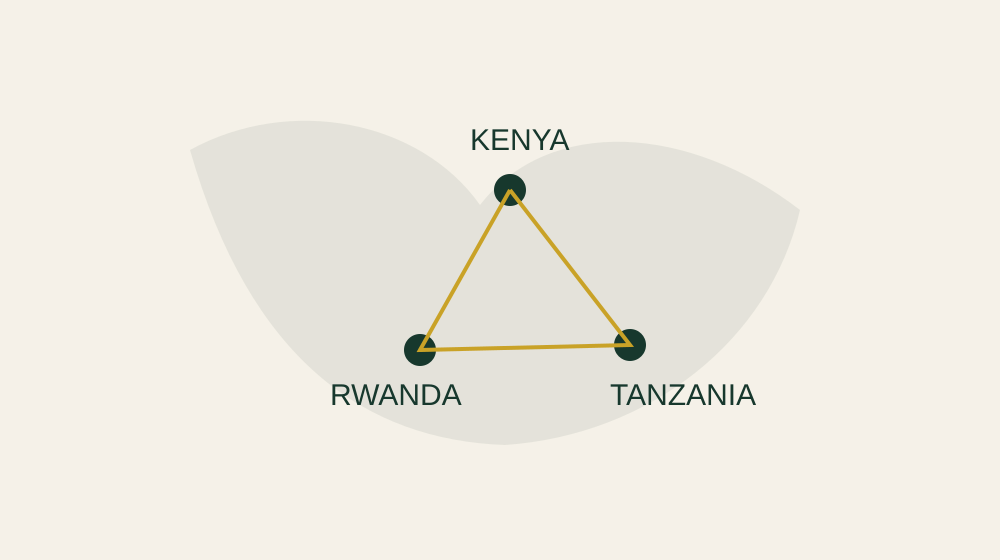

Your business should not depend on you being everywhere.
We help businesses build the structures, processes and systems that turn daily chaos into an organisation that can actually run.

Your business may not have a people problem. It may have a system problem.
From chaos to a business with a way of working.
A system is not a document sitting in a folder. It is a clear, usable way for people, information and decisions to move through a business.

Four areas. One stronger way of operating.
Business Structure
Clear ownership, responsibilities, reporting and accountability.
Explore →02Operational Systems
Workflows, SOPs, checklists and repeatable ways of working.
Explore →03Management & Oversight
Visibility into performance, reporting and accountability.
Explore →04Growth Systems
Structures that make delegation and sustainable growth possible.
Explore →The businesses powering the region need operating structures that can grow with them.
Kenya's State Department for MSMEs says the MSME economy contributes 85% of non-farm jobs. The opportunity is not simply to start more businesses—it is also to help businesses operate with greater clarity and resilience.
Market context: Kenya State Department for MSMEs. The Strategy Room's own reach is shown separately below.
Built from East Africa. Working across borders.
The Strategy Room has served 77+ founders across Kenya, Rwanda and Tanzania.

We don't begin with a template. We begin with how your business actually works.
Every engagement moves through a deliberate sequence: understand the reality, map the gaps, design the right structure, put it into use and refine it.
See our process →If your business is growing faster than its systems, we should talk.
BEFORE
- Founder-dependent decisions
- Unclear roles
- Inconsistent processes
- Reactive management
- Information scattered everywhere
AFTER
- Clear ownership
- Documented systems
- Repeatable processes
- Visible performance
- Less constant founder intervention
How system-dependent is your business?
Answer six practical questions and get a simple indication of where your business currently stands.
Take the diagnostic →Could your team complete their core responsibilities if you disappeared for two weeks?
Let's build a business that can breathe.
Let's identify what your business needs to operate better—and build it.
Book a System →